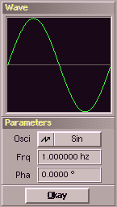

This modulator generates an oscillation. You can choose it's waveform, phase and
frequency. The latter could be adjusted in different ways :
| variation | description |
|---|
| hz | frequency in hz : 1.5 hz |
| time | duration of one period in time units or samples : 5 ms |
| repeats | number of periods (cycles) : 4 rpts |
The waveforms Rnd and SRnd produce random peaks, where for SRnd the peaks will be
smoothed as well. The parameter frequency determines the number of random values per second
(or how long one random value will be hold) and the parameter phase is not used for these both waveforms.
|